Beyond PPO
Every algorithm that came after PPO. What was broken, what changed, and what it means for training your language model. Same notation as the PPO guide, with natural-language prompts and responses throughout.

The Story So Far
In the PPO guide we built up from REINFORCE → Actor-Critic → PPO. We applied it to a LLM and understood every symbol and every gradient. Here's what PPO gave us — and what it didn't.
A stable RL training loop with clipped updates (prevents catastrophic steps), a value function baseline (low-variance advantages via GAE), and a KL penalty against a reference policy (prevents reward hacking). Four models: policy πθ, reference πref, reward model rφ, critic Vψ.
Four Problems PPO Did Not Solve
Each algorithm below targets one or more of these. The notation stays identical to the PPO guide — new symbols are added for each method and listed explicitly.
Notation Additions (new symbols only)
| G | Group size | Number of responses sampled per prompt for advantage estimation. Replaces the critic. Typical: 8–16. |
| μr, σr | Group reward stats | Mean and std of rewards within a group of G responses to the same prompt. |
| εlow, εhigh | Asymmetric clip bounds | DAPO replaces PPO's symmetric ε with decoupled lower/upper bounds. εhigh > εlow allows low-prob tokens to grow. |
| si(θ) | Sequence-level ratio | GSPO's single importance ratio per complete response, computed as the semantic mean of per-token ratios. Replaces the product of token-level ratios. |
| IPRt | Implicit process reward | PRIME's dense per-step reward: log[πθ(at|st) / πref(at|st)]. Already in our notation as a KL component — PRIME repurposes it as a reward signal. |
| oi | Response i in a group | One of G generated responses for the same prompt x. Used in GRPO and all variants. |
The Evolution Timeline
GRPO — Kill the Critic
GRPO's single insight: for LLMs, you can replace the expensive value function Vψ(st) with the group mean reward. Sample G responses to the same prompt; each response's advantage is simply how far its reward deviates from the group's average.
Prompt: Explain why the sky appears blue during the day.
The model samples 8 answers. A judge model scores each on factual accuracy and clarity:
r = [0.91, 0.83, 0.78, 0.94, 0.61, 0.88, 0.55, 0.82] → μr=0.79, σr=0.13
Response 4 (r=0.94): Â_4 = (0.94 − 0.79)/0.13 = +1.15 (well above average, push its token probabilities up)
Response 5 (r=0.61): Â_5 = (0.61 − 0.79)/0.13 = −1.38 (well below average, push its token probabilities down)
DAPO — Four Fixes to GRPO
ByteDance identified four specific failure modes in GRPO when training at scale on long response sequences. Each has a targeted fix.
Fix 1 — Clip-Higher: Preventing Entropy Collapse
In GRPO/PPO, the symmetric clip clip(r_t, 0.8, 1.2) treats token probability increases and decreases the same way. But this is asymmetric in effect: for a rare token (think a low-frequency word like "albeit" or a specialized term like "Rayleigh"), even a small absolute increase in probability turns into a very high ratio rt(θ) ≫ 1, and the clip kills the gradient immediately. The model can never learn to use these words even when they would be perfect for the answer.
DAPO sets εlow=0.2, εhigh=0.28. The clip for increasing probability is looser. Rare-but-valid tokens get room to grow during training.
Fix 2 — Dynamic Sampling: Skip Zero-Gradient Batches
When all G responses in a group are either all good (reward ≈ 1) or all bad (reward ≈ 0), the group advantage Â_i = (r_i − μ_r)/σ_r is near-zero for every sample. The gradient is essentially zero. DAPO filters these batches out entirely. Only batches with mixed outcomes (at least one good and one bad answer) are used for training.
Fix 3 — Token-Level Normalization: Fix Length Bias
GRPO normalizes the loss by each response's length: sum_t / |o_i|. A correct 4-token answer gets a gradient 3× larger per token than a correct 12-token answer with equal reward. This pushes the model to prefer terse responses even when a more detailed one is genuinely better.
DAPO divides by the total tokens across all G responses: sum_i sum_t / (sum_i |o_i|). Every token contributes equally, regardless of which response it sits in.
Group of 2 answering "Why is the sky blue?":
Response A = "Sunlight scatters in air." (4 tokens, r=0.85)
Response B = "Shorter blue wavelengths scatter more than longer red wavelengths in the atmosphere." (12 tokens, r=0.85)
Same reward, but very different sentence quality.
GRPO: A gradient weight = 1/4 = 0.25 per token. B gradient weight = 1/12 = 0.083 per token. A gets 3× more gradient pull per token despite the longer answer being more informative.
DAPO: both normalized by 4+12=16 total tokens. A weight = 1/16. B weight = 1/16. Equal treatment.
REINFORCE++ — PPO Stability, No Critic
REINFORCE++ takes the opposite design philosophy to DAPO: instead of stripping things from GRPO, it adds PPO's stability tricks back to a clean REINFORCE baseline. The result is a method that matches PPO's training behavior without needing Vψ.
The KL penalty is the same per-token formulation from PPO: β·log[πθ(a_t|s_t)/πref(a_t|s_t)] subtracted from the reward at each token. This was removed in DAPO; REINFORCE++ keeps it, providing a softer anchor to the reference policy.
Without a KL anchor to the reference policy, the model often collapses onto whatever generic phrasing happened to score well early. You see the same hedging openers (think "It is important to note that..." or "In summary,...") on every prompt, because those phrases never lose points and the policy slowly stops exploring. REINFORCE++ keeps the KL anchor while still avoiding the expensive critic. A good middle ground when you want more conservative training than DAPO.
RLOO — Leave-One-Out Baseline
RLOO (REINFORCE Leave-One-Out) makes one targeted fix to GRPO's advantage estimate: the baseline for response i should not include response i itself. GRPO's group mean includes the response being evaluated, introducing a small but measurable bias.
Most noticeable at small G (4–6). With G=4, GRPO's mean includes 25% of r_i itself, which is a noisy estimate. RLOO's leave-one-out baseline is based on 3 independent samples. At G=16 the difference is negligible. If you're memory-constrained to G=4–6, RLOO is worth the switch.
Dr. GRPO — Remove Normalization Bias
Dr. GRPO identifies a subtle but consequential bug: dividing by σr (the group standard deviation) introduces a systematic bias that over-weights hard prompts and under-weights easy ones. In practice, hard prompts with widely varying answer quality dominate the gradient, while easy prompts with uniformly good answers contribute almost nothing, even when the small reward gaps there carry real signal.
Easy prompt (factual recall, e.g. "What is the capital of France?"): rewards [0.92, 0.90, 0.91, 0.89] → σ=0.01. GRPO: Â_0 = (0.92−0.905)/0.01 = +1.5
Hard prompt (open-ended reasoning, e.g. "Argue both sides of remote work."): rewards [0.94, 0.61, 0.78, 0.55] → σ=0.16. GRPO: Â_0 = (0.94−0.72)/0.16 = +1.375
GRPO treats these advantages as roughly equal, but the easy prompt's raw reward gap is tiny (0.015) compared to the hard prompt's (0.22). Dividing by σ artificially magnifies the easy prompt's signal. Dr. GRPO removes that distortion.
GSPO — Sequence-Level Importance Ratio
GSPO makes a deeper structural argument: the probability ratio r_t(θ) = πθ(a_t|s_t)/πold(a_t|s_t) is at the wrong granularity. We apply a token-level correction to a sequence-level reward. The mismatch compounds over long responses, creating high variance — especially in MoE architectures where expert routing can differ between numerator and denominator.
GPG — The Bare Minimum
GPG asks a provocative question: after stripping away the critic (GRPO), asymmetric clip, and KL penalty (DAPO), the sequence-level ratio (GSPO) — what actually remains? How much of PPO's machinery is truly necessary for verifiable rewards?
The answer: just the policy gradient with a group mean baseline. No surrogate objective, no clipping, no KL term, no reference model.
GPG is competitive with GRPO on math and code benchmarks when rewards are verifiable and dense enough. With a smooth scalar reward and a small learning rate, the missing clip may not hurt much in practice. But with binary 0/1 rewards (the answer is either right or wrong), the lack of clipping can produce unstable updates. DAPO is the safer default; treat GPG as a useful ablation baseline.
PRIME — Dense Process Rewards
Every method so far inherits PPO's fundamental reward structure: a single scalar at the end of the sequence. For a 500-token model response, 499 tokens receive zero reward signal. PRIME breaks this entirely. It assigns a dense reward to every reasoning step — with no human annotation and no separate PRM model.
The Key Insight: The Log-Ratio Is Already a Reward
From the PPO deep dive, we defined the implicit reward from the optimal policy derivation:
PRIME extends this to the token level. At each step t, define the Implicit Process Reward (IPR):
Long-form answers are sequential and compositional. Each sentence builds on the previous ones, and the conclusion is only as good as the claims that led to it. With GRPO's sparse reward, the model only learns "the final answer scored 0.83" — it never finds out whether the topic sentence, the first claim, or the citation was the weak link.
PRIME gives a signal at every step. If the next token is one the trained policy now favors more than the reference policy did, IPR > 0 (we are moving in a direction the reward signal endorses). If it is one the policy is now less confident about, IPR < 0. This step-level feedback dramatically improves credit assignment for tokens early in the response.
Full Comparison
| Method | Removes | Adds / Changes | Models | Reach for it when… |
|---|---|---|---|---|
| PPO | — | Baseline | 4× | You have a learned reward model and plenty of VRAM |
| GRPO | Critic Vψ | Group mean baseline | 2× | Good default when rewards are verifiable |
| DAPO | KL term | Asymmetric clip, dynamic sampling, token-norm | 2× | ⭐ Recommended default — fixes entropy collapse on rare words |
| REINFORCE++ | Critic Vψ | Adds KL + clip back to REINFORCE | 2× | You want conservative training with a KL anchor |
| RLOO | Critic Vψ | Leave-one-out baseline (unbiased) | 2× | Small group size G≤6, want an unbiased advantage |
| Dr. GRPO | σ_r normalization | Mean-only centering | 2× | Training on a mix of easy and hard prompts |
| GSPO | Token-level ratio | Sequence-level semantic mean ratio | 2× | Long responses (T>500 tokens) or MoE architectures |
| GPG | Clip, KL, πref | Pure REINFORCE + group mean | 1× | Memory-extremely-constrained, smooth reward function |
| PRIME | Sparse reward | Dense IPR at every step | 2× | ⭐ Highly recommended — step-level feedback for long answers |
A Practical Recipe
References
- Shao, Z. et al. (2024). DeepSeekMath: Pushing the Limits of Mathematical Reasoning in Open Language Models (GRPO). arXiv:2402.03300
- DeepSeek-AI (2025). DeepSeek-R1: Incentivizing Reasoning Capability in LLMs via Reinforcement Learning. arXiv:2501.12948
- Yu, Q. et al. (2025). DAPO: An Open-Source LLM Reinforcement Learning System at Scale. arXiv:2503.14476
- Hu, J. (2025). REINFORCE++: A Simple and Efficient Approach for Aligning Large Language Models. arXiv:2501.03262
- Ahmadian, A. et al. (2024). Back to Basics: Revisiting REINFORCE-Style Optimization for Learning from Human Feedback (RLOO). arXiv:2402.14740
- Liu, Z. et al. (2025). Understanding R1-Zero-Like Training: A Critical Perspective (Dr. GRPO). COLM 2025. arXiv:2503.20783
- Zheng, C. et al. (2025). GSPO: Group Sequence Policy Optimization. arXiv:2507.18071
- Chu, X. et al. (2025). GPG: A Simple and Strong Reinforcement Learning Baseline for Model Reasoning. arXiv:2504.02546
- Yuan, L. et al. (2025). PRIME: Process Reinforcement through Implicit Rewards. arXiv:2502.01456